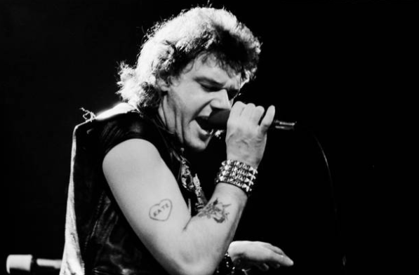
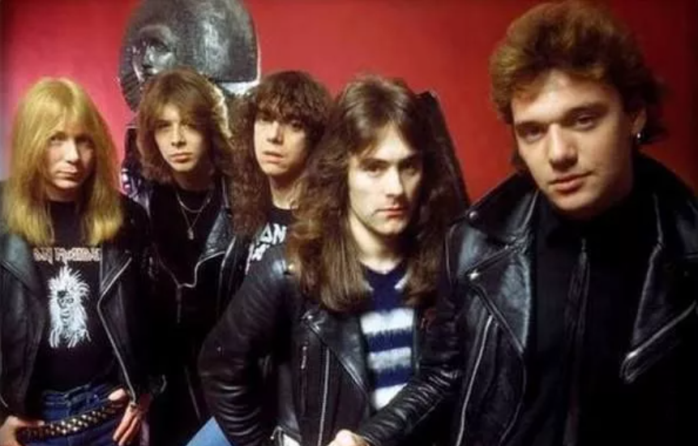
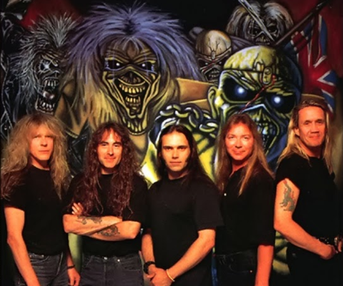

Surgida em 1975, na Inglaterra, a banda Iron Maiden foi pioneira do New Wave of British Heavy Metal [ N.W.O.B.H.M. –
Nova Onda do Heavy Metal Britânico, em tradução livre], movimento musical que serviu de resposta para a ascensão das
bandas punks que estavam enterrando os ícones do hard rock. Além do Maiden, a N.W.O.B.H.M. apresentou pra turma da
camisa preta gente do calibre de Def Leppard, Saxon, Judas Priest, entre outras lendas.
5 curiosidades incríveis sobre o Iron Maiden
1. Havia outros “Iron Maiden” na época
Um deles inclusive é mencionado por Steve Harris, no DVD Early Days, na história do telefonema pedindo que o baixista trocasse o nome da banda por já existir uma homônima. Ainda existia o power trio The Bolton Iron Maiden, que durou de 1970 a 1976. Nos Estados Unidos também existiu, nos
70’s, uma banda chamada The Iron Maidens, composta apenas por mulheres.
2. Paul Day era tão excelente vocalista quanto Bruce Dickinson

Não confundam! Não estou falando de Paul Di’Anno, mas sim de Paul Mario Day, vocalista do Iron Maiden entre 1975 e 1976.
Segundo a história oficial, a fria presença de palco fez com Paul Day fosse demitido do posto. De acordo com Harris,
“apesar de ser um vocalista competente, Day não tem energia ou carisma suficiente no palco”.Contudo, dizer que Paul tinha uma boa voz é pouco para o talento do cara. Entre o final dos 70’s e meados dos dos 80’s,
ele cantou nas bandas More, que inclusive chegou a abrir para o Maiden, Wildfire e Sweet.
3. Havia um segundo guitarrista no Soundhouse Tapes
Em 31 de dezembro de 1978, a banda entrou em estúdio para a gravação de sua primeira demo tape. De acordo com a história
oficial, a formação foi Paul Di’Anno (vocais), Dave Murray (guitarras), Steve Harris (baixo) e Doug Sampson (bateria).Mas anos depois foi comprovada a participação de um segundo guitarrista, um cara chamado Paul Cairns, no projeto. Na
foto acima, você confere um raro registro dos cinco membros que gravaram a fita juntos.Cairns não ficou na banda devido a descoberta de um problema na coluna, que o impossibilitava de tocar, mas a razão de
Steve não mencioná-lo como parte do time que gravou a demo permanece um mistério.
4. Bruce Dickinson foi contratado com Paul Di’Anno ainda na banda

Steve já estava de olhos e ouvidos em Bruce desde 1979, quando o Iron Maiden e o Samson [banda que Dickinson cantoava
antes de entrar pro Iron] tocaram na mesma noite no Music Machine Festival. Com os vacilos de Paul Di’Anno, que vivia
sem voz ou de ressaca, os shows começaram a perder qualidade e a banda se viu na obrigação de ir atrás de um substituto.O convite oficial rolou no dia 29 de agosto de 1981, logo após a apresentação do Samson, no Reading Festival. Nos
bastidores, o empresário da banda, Rod Smallwood, se reuniu com Bruce Dickinson e formalizou o convite. Menos de uma
semana depois daquele encontro, Bruce e o Iron Maiden começaram a trabalhar em estúdio. Isso tudo com Di’Anno ainda no
posto de vocalista, haja vista que seu último show com a banda aconteceu em 10 de setembro, na Dinamarca.
5. Brave New World tem heranças da era Blaze Bayley

Os retornos de Bruce Dickinson e Adrian Smith foram celebrados em 1999. O álbum Brave New World, o primeiro dessa nova
era, foi lançado em 2000. O detalhe é que algumas músicas do disco são sobras de Virtual XI, inclusive com as
“impressões digitais” do ex-vocalista Blaze Bayley.De acordo com várias entrevistas do cantor, a faixa Blood Brothers foi coescrita por ele. Nomad, Dream Of Mirrors e The
Mercenary também são dessa época.